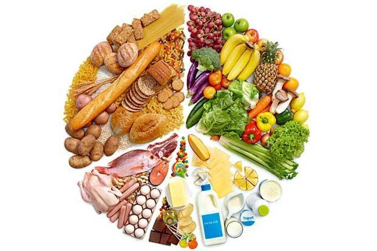
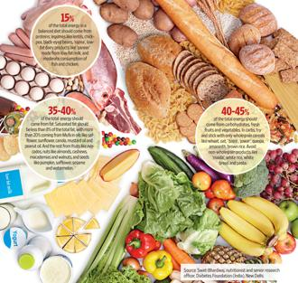

<div class="modal-dialog">
	<div class="modal-content">
		<div class="modal-header">
			<button type="button" class="close" data-dismiss="modal"
				aria-hidden="true">&times;</button>
			<h4 class="modal-title" id="appointmentModalLabel">The
				Mediterranean diet, adapted</h4>
		</div>
		<div class="modal-body">
			<div class="row">
				<div class="col-lg-6 col-md-6 col-sm-6  blog-image">
					<br />
					<h5>Olive oil and walnuts, for instance, can be replaced with
						mustard oil, canola oil, almonds and cashew nuts</h5>
				</div>
				<div class="col-lg-6 col-md-6 col-sm-6 ">
					<h5>
						Published in <a
							href="http://www.livemint.com/Leisure/ZXETv6rJUx0Nhuyu3roKJK/The-Mediterranean-diet-adapted.html"
							target="_blank">Mint-Leading Business Newspaper</a> <br><i>Mon, Apr 15 2013. 09 02 PM
						</i>
					</h5>

					<p>If you are at risk of heart disease, it may be worth your
						while to follow an Indian version of the Mediterranean diet</p>
					<ul class="shareIcons">
						<li><a href="https://twitter.com/DrSujWell" target="_blank"><i
								class="fa fa-twitter"></i></a></li>
						<li><a href="https://www.facebook.com/wellnessbydrsujata"
							target="_blank"><i class="fa fa-facebook"></i></a></li>
						<li><a
							href="https://www.linkedin.com/profile/view?id=12822870&authType=NAME_SEARCH&authToken=yqYt&locale=en_US&trk=tyah&trkInfo=clickedVertical%3Amynetwork%2Cidx%3A1-1-1%2CtarId%3A1436516597183%2Ctas%3Asujata%20kelk"
							target="_blank"><i class="fa fa-linkedin"></i></a></li>
					</ul>
				</div>

			</div>
			<div class="row">
				<div class="col-lg-12  blog-content">
					<p>The Mediterranean (Med) diet is replete with fresh fruits,
						vegetables, nuts, wholegrains and olive oil, with moderate
						consumption of fish and chicken. Red meat, sweets and dairy
						products are eaten sparingly, though red wine is drunk in
						moderation with meals. Increasingly, it has become the “go-to”
						diet among doctors as research shows that it reduces the risk of a
						host of modern-day illnesses, including cancer, Alzheimer’s,
						Parkinson’s, cardiovascular disease, and the overall risk of
						premature death.</p>
					<p>
						The diet is a relatively recent phenomenon, not a traditional diet
						of the region. It was first observed in Greece, Spain and Italy in
						the years immediately following World War II. It was a style of
						eating that emerged from war rationing but has since proved
						remarkably healthy compared to the global increase in consumption
						of fast foods loaded with sugar, red meat and refined
						carbohydrates.<br> And it doesn’t take much to adapt an
						Indian diet to a Mediterranean one.
					</p>
					<p>In early April, an article in The New England Journal of
						Medicine headlined Primary Prevention of Cardiovascular Disease
						With a Mediterranean Diet described the results of a multicentre
						study in Spain, reawakening the discussion on the Mediterannean
						diet among researchers and clinicians alike. The study followed
						7,447 Spaniards between the ages of 55 and 80 for nearly five
						years. Among the study participants, more than half (57%) were
						women and all were at high risk of heart disease. The risk was
						determined by including in the study people who were smokers,
						diabetic, or had three of the following conditions—hypertension,
						elevated LDL cholesterol levels, low levels of HDL, were
						overweight or obese, or had a history of premature heart disease.
						The study participants were randomly assigned a Med diet that had
						either nuts or extra virgin olive oil added to it or were
						recommended a low-fat diet that didn’t necessarily include olive
						oil or nuts. In each of the three groups—two Med diet groups and
						one control/low-fat diet group —nutritionists ran training
						sessions every quarter where adherence to the diet was determined
						with a self-administered questionnaire, followed by personalized
						advice. To figure out if the study participants were actually
						using the olive oil or eating the nuts, the researchers took urine
						and blood samples at random at the end of years 1, 3 and 5 to
						check for olive oil and nut metabolites.</p>
					<p>
						
					</p>
					<p>The study showed that a Med diet with olive oil was better
						at preventing death due to cardiovascular disease and due to all
						causes when compared with the low-fat diet group. Anoop Misra,
						chairman, Fortis C-DOC Centre of Excellence for Diabetes,
						Metabolic Diseases and Endocrinology, New Delhi, responded to the
						study results in an email interview: “While typical Mediterranean
						diets have trumped other diets in terms of its benefits on weight,
						insulin action, lipids, blood pressure and benefits on heart, it
						should be translated in the Indian context. For example, wine and
						fish may not be acceptable to many Indian patients, and olive oil
						would be too costly. In such a case, replacement of these with
						locally appropriate oils and food articles will lead to similar
						benefits.”</p>
					<p>Olive oil and walnuts, for instance, can be replaced with
						mustard oil, canola oil, almonds and cashew nuts.</p>
					<p>
						Rachna Chhachhi, a Mumbai-based nutritional therapist, agrees with
						Dr Misra but says she has some concerns regarding the study
						design. “Study subjects being asked to consume olive oil or nuts
						doesn’t make sense, you cannot look at these things in silos. A
						more holistic approach is far more advisable.”<br> The
						subjects on the low-fat diet had a daily intake of 37-39% fat
						while a typical low-fat diet is 15% fat—the low-fat group wasn’t
						low-fat at all, so it may not have been the best comparison.
					</p>
					<p>Yet the fact that the Mediterranean diet works is not in
						question. Aashish Contractor, head of department, preventive
						cardiology and rehabilitation, Asian Heart Institute, Mumbai,
						says: “Though there are issues with the study design, the results
						of this study have served to reaffirm what we’ve known for a
						while. Mediterranean diets are cardio-protective but the more I
						learn, the more I believe in principles, not a diet. In India we
						can and should put emphasis on eating more fresh vegetables and
						fruits, for though we are largely a vegetarian society we don’t
						eat enough of those. Our grain intake should also tend towards the
						wholegrain. I have recommended these general eating principles for
						the past 10 years to my patients. And in my experience, along with
						exercise and medication, this diet works.”</p>
					<p>The Indian diet falls short on two main counts: First, we
						tend to eat a lot of processed grains (maida, white rice) and not
						enough vegetables; and second, the vegetables are almost always
						overcooked, whereas the ideal way to eat them is raw or lightly
						cooked to maintain their nutritional qualities. We also tend to
						skimp on fruits, and an increased consumption of fast food and
						processed meals that are high in saturated fats, simple sugars and
						low in fibre is taking its toll.</p>
					<p>A systematic review of the studies and analysis on the
						effectiveness of the Med diet and other diets, like high-protein
						and low-carbohydrate, and their ability to manage type 2 diabetes
						was published in March in The American Journal of Clinical
						Nutrition. Jonathan Pinkney, professor of endocrinology and
						diabetes, Peninsula College of Medicine and Dentistry, Plymouth,
						UK, and colleagues found that the Med diet was the most effective
						in controlling glucose levels in the blood. And it leads to
						greater weight loss and a better lipid profile compared with a
						conventional diet, where the study participants didn’t change
						their usual way of eating.</p>
					<p>
						What makes the Med diet special is that there is very little
						saturated fat (saturated fats are found in animal products such as
						butter, cheese, whole milk, ice cream, cream, and fatty meats)
						while there is an increased presence of unsaturated fats like
						monounsaturated fatty acid (Mufa) sources. Research shows that
						Mufa-rich oils can reduce total cholesterol levels in the blood,
						decrease levels of LDL, the “bad” cholesterol, and maintain or
						increase levels of HDL, the “good” cholesterol. The Med diet also
						has a high-fibre content from fruits, legumes and wholegrain
						cereals which slows digestion and prevents swings in blood sugar.
						This action improves insulin sensitivity and helps to keep type 2
						diabetes in check. The micronutrients, antioxidants, vitamins and
						minerals that come from a diet rich in varieties of vegetables and
						fruits also help protect against cancer, heart disease and
						Alzheimer’s.<br> It is difficult to change what we eat. If we
						are to make changes and adhere to them, they need to be tailored
						to our individual tastes and habits. A one-size-fits-all approach
						is unlikely to work. Swati Bhardwaj, nutritionist and senior
						research officer, Diabetes Foundation (India), New Delhi, says
						that from the Indian dietary perspective, we don’t need to make
						too many changes to incorporate elements of the Med diet and reap
						its benefits.
					</p>
					<p>
						The important shift that we need to make, apart from eating more
						fruits and raw vegetables, is to include Mufa-rich oils in our
						diet. The dietary recommendations don’t state how much, but say
						that total fat should be 25-35% of the calories. While olive oil
						is an excellent source of Mufa, other plant-based oils like
						safflower, sunflower, canola, mustard oil and peanut oil are
						Mufa-rich too. And so are avocados and nuts like almonds, cashews,
						macadamias and walnuts. Mufa-rich seeds include pumpkin,
						safflower, sesame, sunflower and watermelon seeds.<br> <em>
							Sujata Kelkar Shetty, PhD, writes on public health issues and is
							a research scientist trained at the National Institutes of Health
							in Bethesda, US.</em>
					</p>
				</div>

			</div>
		</div>

	</div>
</div>